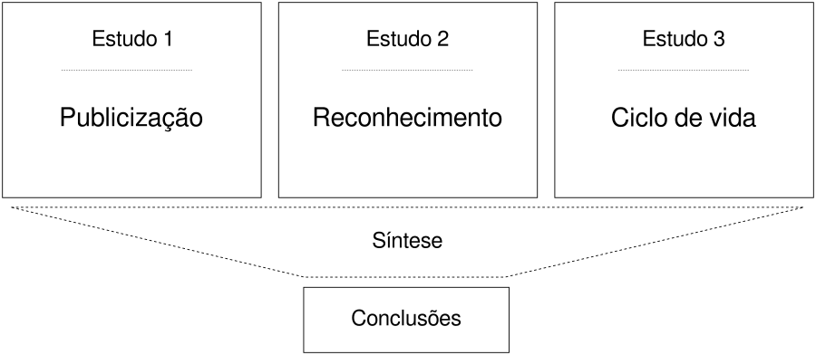
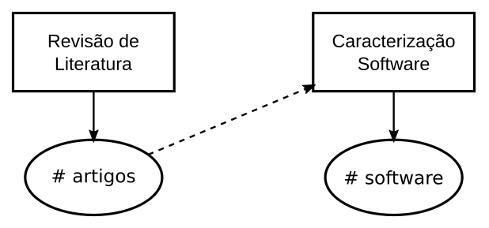

Sustentabilidade técnica de software acadêmico no domínio de ferramentas de análise estática de código-fonte
Sustentabilidade técnica de software acadêmico no domínio de ferramentas de análise estática de código-fonte
Apresentação para banca examinadora da defesa de mestrado do Programa de Pós-graduação em Ciência da Computação da Universidade Federal da Bahia, Salvador-Bahia, 19 de Dezembro de 2017.
Joenio Marques da Costa
Orientadora: Dra. Christina von Flach G. Chavez
Co-orientador: Dr. Paulo Roberto Miranda Meirelles
GOBLE, C. Better software, better research. IEEE Internet Computing, IEEE, v. 18, n. 5, p. 4–8, 2014.
Motivação
O software acadêmico sofre de um fenômeno conhecido por desordem caótica disfuncional (“dysfunctional chaotic churn”) - DCD.
HOWISON, J. et al. Understanding the scientific software ecosystem and its impact: Current and future measures. Research Evaluation, v. 24, n. 4, p. 454–470, 2015. Disponível em: http://dx.doi.org/10.1093/reseval/rvv014i.
Desordem caótica disfuncional (DCD):
- Existência de muitos projetos com poucos usuários;
- Projetos com ciclos de vida curtos que se encerram junto ao financiamento inicial;
- Comunidades de usuários desconectadas e paralelas;
- Incompatibilidades entre os projetos de maneira persistente e imutável;
- Tentativas constantes e aparentemente não coordenadas de “reiniciar” tudo (re-boots).
Objetivo
Analisar os projetos de software acadêmico de análise estática e sua sustentabilidade técnica com o propósito de caracterizar com respeito a publicização, reconhecimento e ciclo de vida na perspectiva do cientista de software acadêmico no contexto das conferências de Engenharia de Software ASE e SCAM.
Questão de pesquisa
Questão: Como a desordem caótica disfuncional (DCD) pode explicar a sustentabilidade técnica dos projetos do ecossistema de software acadêmico de análise estática em termos de publicização, reconhecimento e estágio de evolução?
Métricas
- Publicização: número de projetos disponíveis para download, com código fonte disponível, tipo de licença
- Reconhecimento: número de citações, número de menções, número de usos e contribuições
- Ciclo de vida: número total de lançamentos, data e número de versão de cada lançamento, variação no número de módulos do código fonte
Estratégia de pesquisa
Estudo de caso exploratório, características:
- Foco num fenômeno, organização ou sistema em particular;
- Baixo nível de generalização e alto realismo do contexto;
- Sem intervenção do pesquisador no ambiente.
STOL, K.-J.; FITZGERALD, B. A holistic overview of software engineering research strategies. In: 3rd International Workshop on Conducting Empirical Studies in Industry. [S.l.: s.n.], 2015. p. 8.

Software acadêmico
Todo software usado para coletar, processar ou analisar resultados de pesquisas com intenção de publicação na literatura acadêmica, incluindo desde protótipos escritos pelos próprios cientistas, a produtos completos desenvolvidos profissionalmente.
ALLEN, A. et al. Engineering academic software (dagstuhl perspectives workshop 16252). In: Dagstuhl Manifestos. [S.l.]: Schloss Dagstuhl-Leibniz-Zentrum fuer Informatik, 2017. v. 6, n. 1.
Modelo de processo de software acadêmico
HOWISON, J. et al. Understanding the scientific software ecosystem and its impact: Current and future measures. Research Evaluation, v. 24, n. 4, p. 454–470, 2015. Disponível em: http://dx.doi.org/10.1093/reseval/rvv014i.
Incentivos de reputação e práticas de software acadêmico
HOWISON, J.; HERBSLEB, J. D. Scientific software production: incentives and collaboration. In: Proceedings of the ACM 2011 conference on Computer supported cooperative work. [S.l.: s.n.], 2011. p. 513–522.
Sustentabilidade de software
Sustentabilidade é um tema multidisciplinar, sistêmico e com múltiplas dimensões:
- Individual
- Social
- Econômica
- Ambiental
- Técnica
BECKER, C. et al. The karlskrona manifesto for sustainability design. CoRR, abs/1410.6968, 2014. Disponı́vel em: hhttp://arxiv.org/abs/1410.6968i.
Sustentabilidade técnica de software
A dimensão técnica diz respeito a capacidade do software de perdurar e de continuar sendo suportado ao longo do tempo, implicando em qualidades de longevidade e manutenção.
VENTERS, C. C. et al. Software sustainability: The modern tower of babel. In: CEUR Workshop Proceedings. [S.l.: s.n.], 2014. v. 1216, p. 7–12.
Ciclo de vida de software
CAPILUPPI, A. et al. Adapting the staged model for software evolution to free/libre/open source software. In: Ninth international workshop on Principles of software evolution: in conjunction with the 6th ESEC/FSE joint meeting. [S.l.: s.n.], 2007. p. 79–82.
Análise estática
Análise estática é a atividade de obter informações acerca de um programa a partir do seu código-fonte, tem suas origens nos estudos e desenvolvimentos de compiladores.
CRUZ, D. d.; HENRIQUES, P. R.; PINTO, J. S. Code analysis: Past and present. 2009.
Estudo 1:
Publicização de software acadêmico de análise estática

Revisão de literatura nas conferências ASE e SCAM
Resultados do estudo 1
- 60 projetos de software acadêmico
- 40% indisponível para download
- 56% disponibiliza código fonte
- 35% utiliza licença de software livre
Estudo 2:
Reconhecimento de software acadêmico de análise estática
Resultados do estudo 2
- 21% (13) são mencionados na literatura apenas na publicação inicial
- 28% (17) dos projetos recebem contribuição além da publicação inicial
- 43% (26) são utilizados em outras pesquisas além da publicação inicial
Estudo 3:
Ciclo de vida de software acadêmico de análise estática

Terceiro, A. et al. Analizo: an extensible multi-language source code analysis and visualization toolkit. In: CBSOFT-Ferramentas. [S.l.: s.n.], 2010.
Resultados do estudo 3
Resultados do estudo 3
- 206 lançamentos (releases) com código fonte foram analisados
- 76% dos projetos encontram-se em estado inicial de desenvolvimento ou encerrado
Síntese de resultados
…
O reconhecimento ao software acadêmico de análise estática vem crescendo
Os projetos com licenças de software livre possuem maior reconhecimento
O crescimento médio no número de módulos confirma a lei de “Crescimento Contínuo” do software
80 artigos apresentam fortes indícios de serem impossíveis de reproduzir uma vez que fazem menção (usando ou contribuindo) a projetos de software acadêmico de análise estática em estágio Closedown.
Recomendações
- Tornar o código fonte do software público o mais cedo possível
- Fazer o software fácil de ser encontrado e citado fornecendo metadados
- Adotar uma licença de software e respeitar as licenças dos outros projetos
- Definir processos claros e transparentes de contribuição, governança e comunicação
JIMéNEZ, R. C. et al. Four simple recommendations to encourage best practices in research software. F1000Research, v. 6, p. 876, jun. 2017. ISSN 2046-1402. Disponı́vel em: https://f1000research.com/articles/6-876/v1i.
Conclusões
- 3% (61) artigos, entre 1873, publicam software acadêmico de análise estática com indicação de URL
- entre os 61 artigos encontramos 60 projetos de software acadêmico de análise estática
- 33% (20) dos projetos encontram-se em estágio inicial de desenvolvimento
- 40% (24) dos projetos encontram-se encerrados e não estão disponíveis para download
Questão: Como a desordem caótica disfuncional (DCD) pode explicar a sustentabilidade técnica dos projetos do ecossistema de software acadêmico de análise estática em termos de publicização, reconhecimento e estágio de evolução?
DCD C1:
Existência de muitos projetos com poucos usuários
…
DCD C2:
Projetos com ciclos de vida curtos que se encerram junto ao financiamento inicial
…
As características C3, C4 e C5 de DCD estão fora do escopo deste estudo.
- C3: Comunidades de usuários desconectadas e paralelas;
- C4: Incompatibilidades entre os projetos de maneira persistente e imutável;
- C5: Tentativas constantes e aparentemente não coordenadas de “reiniciar” tudo (re-boots).
Contribuições
- Um catálogo de projetos de software acadêmico para serem utilizados em outras pesquisas
- Amadurecimento no debate sobre sustentabilidade de software
- Alerta sobre os problemas causados pela indisponibilidade dos códigos produzidos nas pesquisas
- Um framework para avaliação do fenômeno DCD em um domínio de aplicação específico
Trabalhos futuros
- Atualizar o perído da revisão de literatura do estudo 1 para seleção de projetos
- Selecionar projetos de software acadêmico em outras conferências importantes
- Caracterizar outras dimensões do software na visão de usuário e engenheiros de software
- Incluir na revisão de literatura jornais específicos para software, exemplos, JOSS, JORS e SoftwareX
Obrigado!
joenio@joenio.me
Esta apresentação está disponível em:
http://joenio.me/slides/sustentabilidade-software-academico.html
(código-fonte: http://github.com/joenio/joenio.me)

Histórico de apresentações
Onde e quando esta apresentação foi realizada
- 19 Dezembro 2017, UFBA DCC, Salvador, defesa